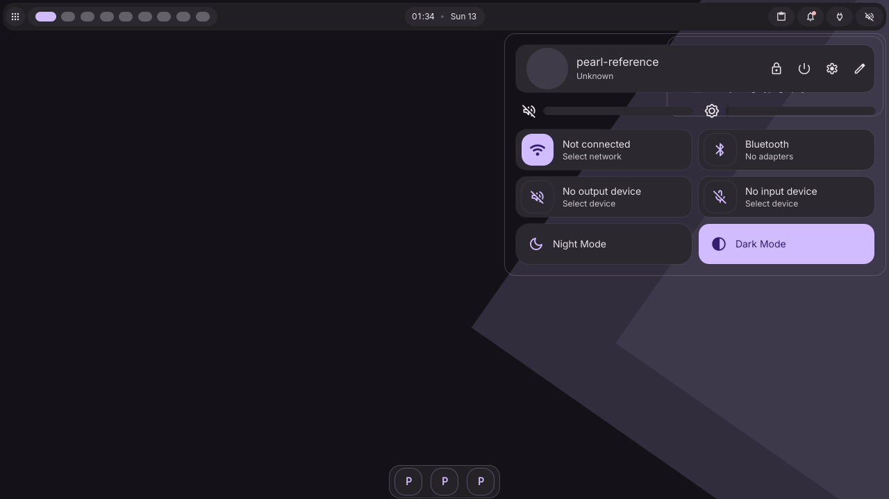

Actual, unedited 1280×720 captures of Pearl on private Aqueous. NetworkManager and BlueZ are isolated fake peers; the password and pairing codes in this visual evidence are synthetic. The DMS image is the frozen T00 reference.

Pearl retains rounded tonal cards, purple focus rings, a compact live bar and native Aqueous surfaces. Network and Bluetooth details expand within the scrolling control center. Its composition remains taller than DMS's tile grid. New authentication prompts scroll their action row into view; unsupported network authentication has an explicit editor handoff.
Connectivity results · Physical read-only check · Verification and remaining acceptance · Implementation contract